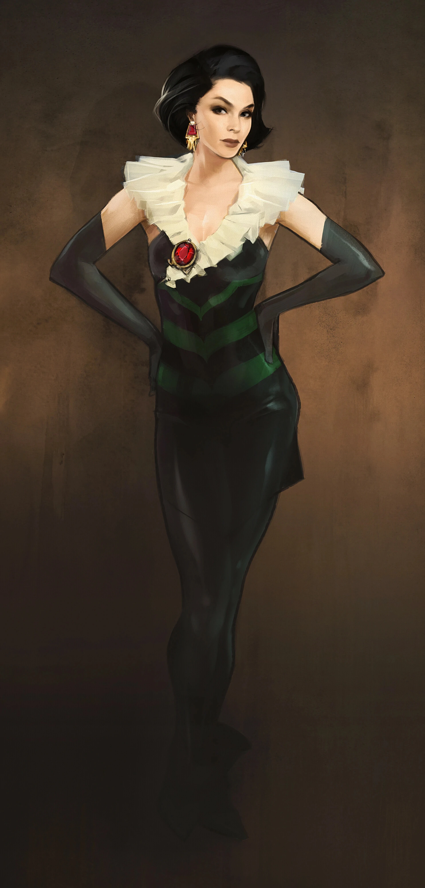
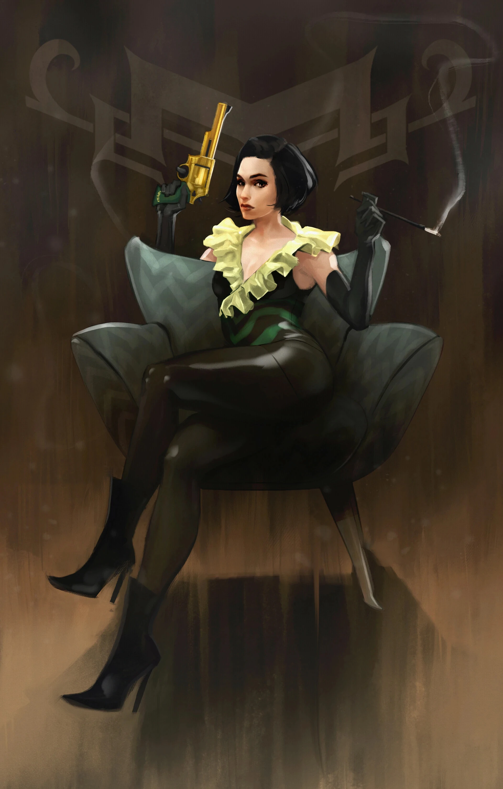

Shannon Rivers
シャノン・リバーズ
背景
シャノン・リバーズは、ミステリーの女主人の声優であり、アパラチアで活動したオーダー・オブ・ミステリーの創設者です。
『Fallout 76』に登場し、オーダー・オブ・ミステリーのクエストラインで彼女の遺産が探求されます。
シャノンは2024年にウェストバージニア州ベックレーで生まれました。
地方劇場やツアー公演で初期のキャリアを積み、ショウ＆アソシエイツと契約後、2047年にラジオドラマ『Invaders from Planet Zed!』でラジオデビュー。
才能豊かで多才な女優として評判を得て、数多くのラジオドラマに出演しました。
2051年にはシルバー・シュラウドのラジオ番組でミステリーの女主人役を始め、長く演じ続けることになります。
専門的なスキル以外にも、慈善活動の支援者として知られ、特にアパラチアの経済的に困窮した住民に影響する問題に取り組みました。
フレデリックとの出会い
2053年、シャノンは著名な発明家・建築家のフレデリック・リバーズと結婚しました。
二人はフレデリックの工学研究所のためのチャリティー・ディナーで出会いました。
シャノンはセレブゲストとして招かれていましたが、まだ無名だった彼女を、フレデリックが隅で見つけ、製造アルゴリズムについて夢中で語り始めました。
驚いたことに、彼女は本当に興味を持ちました。
何気ない会話が愛情深い関係へと花開き、やがて娘オリヴィアが生まれました。
秘密基地とTV降板
ヒューブリス・コミックスがシルバー・シュラウドのテレビドラマ化を決めた時、フレデリックは四半世紀の蓄えを注ぎ込み、リバーサイド邸の地下にミステリーの女主人の装備と基地を再現しました。
熱狂的ファンのケント・コノリーと共に建設されたこの秘密基地は、2077年6月29日にシャノンに披露されました。
しかし、テレビ版のキャスティングで問題が発生。
プロデューサーのアーロン・バボウスキーは、30年近くキャラクターを演じてきたシャノンではなく、より知名度の高い女優クレア・レデルを起用することを決定しました。
プロジェクトマネージャーやリードライターがシャノンを推したにもかかわらず、バボウスキーは「年齢」を理由にシャノンを不適格と断じました。
さらにヒューブリスはラジオ番組からもシャノンを降板させ、クレアに差し替えることを決定。
当然ながらシャノンは怒りましたが、大戦がすべてを相対化しました。
大戦後
リバーズ一家はリバーサイド邸の地下基地をシェルターとして数カ月を生き延びました。
2078年7月8日、チャールストンへの物資補充の帰路でレイダーに襲われました。
フレデリックが交渉しようとして失敗した時、レイダーがオリヴィアに手をかけました。
シャノンは即座に反応——フレデリックが雇ったトレーナーとの数カ月の訓練が彼女に圧倒的なアドバンテージを与え、1分以内に複数のレイダーを倒しました。
オリヴィアはシャノンの訓練を懇願。フレデリックの冷静な理屈もあり、シャノンは再びミステリーの女主人の役割を担うことを決意。
1カ月後、フレデリック製の戦闘装備を身にまとい、定期的に出動を開始しました。
最初の大きな成功はルイスバーグ近くでレイダーから難民キャラバンを救出したことでした。
「シャノンには何をすべきか分からなかっただろう。でもミステリーの女主人には分かった。」
オーダー・オブ・ミステリーの創設
しかし、ミステリーの女主人はどこにでもいるわけにはいきませんでした。
2078年11月、シャノンは孤児の少女たちを引き取り始めました。最初の3人は、リバーズ家のガレージを漁っていたクラリッサ、イヴ、エイミーでした。
2079年までにキャラバンが絶え間なくマナーの前を通過するようになり、シャノンはさらに多くの孤児を受け入れ続けました。
オリヴィアやフレデリックと共にマナーを孤児院として改装しましたが、それだけでは足りませんでした。
こうしてオーダー・オブ・ミステリーが誕生。
ミステリーの女主人が体現する美徳——勇気、知略、慈悲——を掲げ、影の中からアパラチアの人々を守る姉妹団として設立されました。
シャノンはヘッドミストレスとして組織を率いました。
レイダーとの戦い
オーダーは繁栄し、訓練は数年にわたり激化。
2082年2月には年長の少女たちをペアで物資調達や情報収集に送り出すまでに成長しました。
全てが変わったのは2082年12月。デイヴィッド・ソープのギャングがチャールストンのダムを爆破し、町を水没させ、レスポンダーをほぼ壊滅させました。
この残虐な行為に衝撃を受けたシャノンは、レイダーを予想以上の脅威と判断し、オーダーの焦点を荒れた境域からのレイダー撲滅に集中させました。
2082年冬から2083年にかけてレイダーの陣地を偵察し、2083年3月にはミストレスたちをレイダーに対して解き放ちました。
秘密組織の利点を活かし、素早く攻撃して影に消える戦術は功を奏しました。
しかし、3年近い完璧な実績記録は2086年2月7日に崩れ去りました。ミストレスのクラリッサが任務中に死亡——オーダー初の犠牲者でした。
崩壊
クラリッサの死後、組織内で秘密主義と孤立に疑問の声が上がりました。
しかしシャノンは同盟を拒否し、秘密を守り続けました。
「ミステリーの女主人の最大の強みは常にサプライズの要素だった。一人の女性が何でもできるのは、誰も彼女を脅威と思わないから。もし暴露されれば、レイダーは反撃できる。影とは戦えないのだから。」
2086年5月、シャノンはノービスの新ミストレスにオリヴィアではなくイヴ・デヴォワールを選びました。
オリヴィアはこれを母からの侮辱と受け取り、レイダーへの離反を決意。
オリヴィアがブロディ・トーランスを通じてレイダーに情報を流し始めると、事態は急速に悪化しました。
2083年3月から2086年7月までの3年間で失ったのは3人のミストレスでしたが、オリヴィアの情報流出により、わずか3カ月で7人が殺害されました。
レイダーはあらゆる任務地で待ち伏せしていました。
シャノンはマナーを封鎖し、外出を最上位4人のみに限定しましたが、Cryptosのデータにはすでに2カ月分の任務が含まれていました。
レイダーはそれを使い、一人ずつ殺していきました。
11月13日頃、シーカーのレイチェル・ウェストがオリヴィアの計画に気づき、追い詰められたオリヴィアはオーダーの仲間たちを虐殺。父フレデリックさえも殺害しました。
そして母に最後のメッセージを残しました——セネカ・ロックスの、大戦前にキャンプをしていた「特別な場所」での最後の対面への招待を。
最期
生き残った者への最後のメッセージを残し、シャノンは遺体を埋葬した後、娘との最後の対面に向かいました。
2086年11月16日、アパラチアの山頂で母と娘は対峙しました。
壮絶な戦いの末、シャノンの全ての訓練と装備を以てしても、数十年若い娘にはわずかに及びませんでした。
ヘッドミストレスは致命傷を負いましたが、彼女もまた娘を傷つけることに成功しました。
しかしオリヴィアも勝利を味わう暇はありませんでした。
隠れていたブロディは、オリヴィアの状態を見て即座に裏切り。
「実の母親をあれだけ裏切る女が、ソープを裏切らない保証がどこにある？」——そう言い放ち、ブロディはオリヴィアを銃殺しました。
荒れた境域で、オーダーは終焉を迎えました。
プレイヤーとの関わり
シャノンの遺体はセネカ・ロックスで見つかり、クエスト「The Mistress of Mystery」で調査対象となります。
所持品にはボロボロのドレス、ラーの目、シャノン・リバーズの録音、ヘッドミストレスのログイン、戦前の紙幣が含まれます。
備考
- シャノンは『Fallout 4』で言及のみだったキャラクターのうち、『Fallout 76』に実際に登場した3人のうちの1人です（他はデル・ウォルシュとエリオット・マンフィールド）。
- 声優のクローディア・クリスチャンが演じています。
ギャラリー


登場作品
シャノン・リバーズは『Fallout 76』にのみ登場します。
以前はシルバー・シュラウド・ラジオでミステリーの女主人として声が聞かれ、『Fallout 4』のヒューブリス・コミックスのターミナルで言及されていました。
シャノン・リバーズは、Fallout世界で最も人間味あふれるヒーローの一人だと思います。
ラジオで30年近くヒーローを演じてきた女優が、大戦後に「本物のヒーロー」にならざるを得なくなる。
最初は「シャノンには何をすべきか分からなかった。でもミステリーの女主人には分かった」——つまり、彼女が頼ったのは自分自身ではなく、長年演じてきた「キャラクター」だった。
そこから徐々に、架空のヒーローと現実の自分が重なっていく過程が美しい。
そして最も切ないのは、TV版からの降板。
30年間キャラクターを守り育ててきたのに「年齢」で切り捨てられる。
でも大戦後、その怒りが彼女をより強くした——もうプロデューサーの許可は要らない、自分が本物のミステリーの女主人になればいいのだから。
「私が提供できたのは、コミックブックのヒーローだけ。でも……それで十分だったのかもしれない」。
62歳で娘と戦って死んだ女優の、最も静かで、最も力強い言葉です。
This article was created by translating and editing Shannon Rivers from Nukapedia: The Fallout Wiki.
Licensed under the Creative Commons Attribution-Share Alike License (CC BY-SA 3.0).
コミュニティ維持のため、寄付を受け付けております。
> COMMENTS